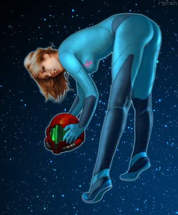

Videojuego
 De: La Frikipedia, la enciclopedia extremadamente seria.
De: La Frikipedia, la enciclopedia extremadamente seria.
Captura del popular videojuego Street Fighter II.
Se llama videojuego a la secuencia de imágenes que pasa muy rápido, una droga muy reciente que se consume por vía visual/auditiva a través de una consola o un ordenador. Se diferencia de otras drogas en que su aplicación necesita ser continuada para percibir los efectos. En caso de interrumpirse la aplicación, se percibe de inmediato el mono, que se agrava rápidamente.
Efectos en el organismo
El pasatiempo del caballero moderno
A corto plazo
Enrojecimiento ocular, dolor ocular, dolor muscular en manos y culo (en caso de no estar bien sentado) o piernas (en caso de jugar de pie, por ejemplo en una sala de juegos), emborronamiento de la vista, adicción a la cafeína, parálisis parcial, autismo, y un largo etc. Tambien se dice que la mayoria de los adictos pierden años escolares y despues de recapacitar sus errores se convierten en emos.Muchos videojugadores son jebis. Otra de las consecuensias es cambiar a tu novia por sentir mayor exitacion sexual al tener un contacto sexual intimo con el joystick que con tu novia.

El abuso de los videojuegos puede provocar daños cerebrales
Si pasas mas de 3 horas sin siquiera tocar un joystyck empiezas a sudar, tiemblas y solo piensas en ello
A largo plazo
El TeAcheCe (Principio activo de los juegos con motor Quake 3) sumado al Etanol que entra en el cuerpo a través del USB (sólo jugadores que insertan un cable USB por el orificio rectal) podría causar mpobrecimiento monetario, fracaso académico, reducción de actividad sexual, frikismo, callos en la muñeca con la que se usa el ratón, reflejos propios de un Jedi ante estímulos visuales, alteración lingüística en la escritura con sustitución de letras vocales por números (léase l33t), etc.
Además, según muchos entendidos, como la Dra. Carmen Tirosa, produce necesidad de realizar actividades violentas con armas de fuego o katanas, insensibilidad respecto a la violencia y la muerte, y sed de sangre, ya que como todo el mundo sabe, todos los videojuegos son más violentos que el cine, la guerra y el vandalismo callejero todos juntos.
Además, está demostrado que si se juega con videojuegos y no se bebe ni se come ni se duerme ni se respira ni se va al baño durante un tiempo prolongado, se produce la muerte (y ésto sólo pasa con los videojuegos).
Tratamiento
Laptop de juegos Atari, incluye lista de posibles errores con 500 páginas
No se conoce un tratamiento eficaz por ahora para curar la adicción a los videojuegos. Se ha intentado con amenazas y reportajes de televisión, sin resultados concluyentes. En la actualidad, se estudia la posible aplicación terapéutica de un mazo de marisco en la cabeza del paciente, así como otras técnicas de choque, como la de choque contra muro de hormigón o la de choque contra camión cisterna.
El Que Más Juega a eso
Su nombre no se conoce ni por las calles ya que se pasa todo el dia con lo videojuegos(evidentemente).Esta persona se la conoce por su gran capacidad por saber cuando sale un juego,de que va y todo sobre la consola(evidentemente).Se sabe que adora la Ps3 y que va a inventar la Ps4 o Ps5 gracias a su codiciado dinero que gana todas las semanas, forma parte de Sony, y sin que se haya enterado la ansiada compañia.Todo el dinero que tiene se lo gasta en videojuegos.
Muchos rumores hablan de él,lo ha hecho por conseguir llegar a donde está.Creo incluso que sustituirá a Bill Gates ya que creara un ordenador tan potente que dominara el mundo pero mientras tanto permanece tranquilo creando ya la Play 7. Es mejor dejarle en paz ya que su ira es infinita.
Se ha comprobado que su consola tiene mas tecnología que los satelites microondas militares, los superordenadores del FBI y el transbordador espacial de la NASA juntos. Él obtuvo los puntajes mas altos, los más bajos y los más medianos.
Completó toda la saga Zelda sin guías y de tanto pensar obtubo la capacidad de Telequinesia con la que controla su Joystick.
Se dice que jugar contra el puede ser perjudicial para tu salud porque te hara perder la cabeza y te obligara a comprar las consolas de Sony.
Ensayos Sobre VideoJuegos
 Ya se porque me gustan tanto los videojuegos...
Hay Incontables Estudios Sobre el Paradigma Intercraneal de los Gamers y Su Relacion Bidireccional Con Sus VideoJuegos, Este Es Un Ensayo Escrito Por el Celebre CantaAutor Anti-Cristo AKA "DiarreaVerbalico":
«Es de Ñoños pasar horas jugando frente a una Jodida pantalla y perderse las maravillas de la vida con un Putito juego que nadie, (salvo su exclusivo Grupo de Excluidos), Entiende.
Sabemos que Los Videojuegos, Son la Salida de Los Pendejitos Inadaptados Para Evadir la Realidad y Sentirse Muy
Malotes Repartiendo Putasos en KOF, Smash Bros o GTA.
¡Joder!, Si Tan Malotes Sè Sienten, Vayan Directamente a Sus Calles a Robar Autos De Verdad, Que Eso Si Les Va a Traer Un Lucro Verdadero, No Esas Mamaditas De Botones, Que lo Unico que Va a Hacer, Es Atrofiarles Los Dedos y Ya No Van a Poder Mansturbarse Con Las Fotos de "Tomb Raider" o las Zorras de "Dead or Alive" y"Resident Evil".
Se Sienten Expertos en Balistica y Manejo de Vehiculos, Con Solo Jugar "Need For Speed" y "Halo"; Ya quiero Ver Que Los Manden al Ejercito con Sus Encleques Cuerpecitos De Niña, Para Enfrentarse a las Fuerzas del Narco, Y A Ver Cuantos de Ellos Se Siguen Sintiendo"Hitman", O El Mafufo Elfo de la Leyenda de Zelda.
Pendejos Maricones Retraidos, Mas Que Personas, Parecen Una Subraza de Ratas Con Joroba y Vista Atrofiada; y Aun Asi Quieren Mejores Graficas En Sus Consolas de "X-BOX" y "Play Station"; Se Vienen en Seco Con Sus Controles Inalambricos Y Ya Se Sienten Llenos de Amigos Por Jugar 24 Horas Seguidas Conectados a Internet Mediante sus Consolas.
Pero Ni que Decir De las Consolas de Realidad Virtual Que Vienen a Absorver Mas Neuronas Por Segundo que las Caricaturas de Naruto y Avatar Juntas; Y Me Refiero Claramente a Aquellas en las Que Sumergen a Sus Victimas, En Un Cagado Mundito Coloreado Donde Tienen Que Poner Aprueba Sus Capacidades Infrahumanas.
Con Esa Pendejada de "Guitar Hero" ya Muchos se Sienten Estrellas de rock; Haciendo Covers de las Taraditas Canciones de RBD, My Chemical Romance y Lacuna Coil; No se Como Se Dejan Engañar con Esas Estupideses, si El Malparido Videojuego Te Viene Costando Casi Lo Mismo Que Una guitarra Electrica de Segunda Mano, En las Paginas de ventas por Internet.
Con el Nintendo Wii, No Falta El Balurdo Afeminado Que Ya Se Siente Profesional en Golf Beisbol Tenis y Bolos; Esos Jueguitos de Niñas, Que Mas que Retos Para el Jugador, son Un Insulto a Su Inteligencia; Sale Mas Barata la Membresia a una Cancha de Tenis o Un Sitio de Bolos, Que la Puta Consola; Pero qué Nos Podiamos Esperar de Esas Mariconas Paranohicas Que No Se Sienten Comodas de Salir de Su Casita.
Si Mucho Puto Realizmo Impregnado Tienen en la Consola, Traten de Insertarse el Wiimote en el Culo, Para Ver Si Aparece en la Pantalla Sus Nalgas Con Forma de Lego y Un Banano Cuadriculado Insertado;
Y Si Ya Alcanzaron el Nivel de Profesional en El Box, Los Invito a visitar el Barrio Bravo de Tepito y Gritar a los Cuatro Vientos que Buscan Una Pelea Con el Mejor del Rumbo; Despues de que Seguramente los Hagan Mierda Molida, Podran Demandar a Nintendo Por los Traumas Fisicos y Psicologicos Que Les Causaron Los Neardentales Regguetoneros.
En Fin, No Creo que Esté Mal Tener Una Consola; Mi DSLite Esta Atascado de Juegos Hentai, Y Cuando Haya Titulos Pornograficos Para el Wii y el Control Tipo Vagina Incluido, Tengan en Cuenta que Me Conseguire uno, Solo Por el Ocio.
Lo Que Si Es Imperdonable, Son Esos Obsesionados Inframentales Que No Viven Mas que Para Coleccionar Consolas; Pseudo Humanos que nos Estan Llevando a una Retroevolucion; Santa Maria Madre de Dios, te Follare en Todas las Posiciones Si Nos Libras de Estos Enfermos Gamers Hijos de Puta.»
~ El Anti-Cristo Despues de Darse Cuenta Que Es un Miserable que no Le Alcanca Para Tener un VideoJuego...
Videojuegos famosos
Aquí tenemos a
Sonic, ah, perdón!, no es Sonic, es
Knuckles (es que estos animalejos son todos iguales).
Aquí vemos la "diversidad" de los personajes de la saga de
Mario Bros. Evidentemente los chicos de Nientiendo son super-hyper-mega-originales, y sobre todo
muy creativos.
- Super Mario Bros: Importantisimo videojuego del género survival-horror, laureado inspirador del FEAR, cuyos increibles graficos en 1D fueron pasados años después al 3D y desde entonces permiten disfrutar de la sangre y las visceras al máximo. Su imaginativa idea de un fontanero en un mundo de colores nos indica la cantidad de droga que había ingerido el creador el dia de la creacion. El protagonista del juego es Mario, un
fracasado de mierda un fontanero con una sobredosis de viagra que se dedica a recorrer castillos venciendo a extrañas criaturas probablemente visiones a causa de una mala ingestión de hongos para que luego resulta que al final de cada capitulo, una extraña seta enana con patas le diga que la princesa Bitch Peach no se encuentra en el castillo.
- Pacman: Impresionante juego de trama muy compleja e inexplicable donde una forma de vida extraterrestre a base de silicio se desplaza por un plano bidimensional sin necesidad de movilizarse con piernas, brazos, alas, tentaculos, ni nada que se le parezca a extremidades o algún medio de locomoción. Este ser posee la capacidad de engullir todo lo que se encuentra a su paso, casi como si fueraHomer Simpson (quizá por eso lo hicieron amarillo) y el objetivo del juego es huir de unos fantasmas de colores que intentan matarte y te persiguen mientras tú estas atrapado en un laberinto donde la salida te hace aparecer nuevamente por la entrada, pero si comes unas pastillas de éxtasis que hay en las esquinas del laberinto entonces los fantasmas se ponen lentos y azules como pitufos y ahora te los puedes comer, pero los hijos de puta van al centro del laberinto y se regeneran... en fin, ya dije que la trama era muy complicada para entenderla.
- E.T para Atari: Interesantísimo videojuego de original planteamiento y desarrollo, con unos gráficos de ultra tecnologia punta disponibles solo para consolas de última generación, inspirado en una película que narra la vida de un granjero en Alaska, perseguido por el Ku-Klux Klan y hordas de nazis en bikini (aguas que su lider es Hitler) armadas con taparrabos inflamables,los requisitos son 10 GB de RAM para jugar la 1era mision.
- Street Fighter: Juego creado especialmente para marginados de escuela cuyos compañeros le hacen bullying, asi descarga su frustracion contra los personajes del juego, todo un ahorro en psicólogos infantiles. Se trata de una especie de FIFA World Cup pero de artes marciales en vez de futbol, así que tenemos participantes de varios paises cada uno con su estilo de lucha autóctono, y de hecho el juego es tan realista que hasta hicieron que el luchador brasileño sea un piel verde pelirrojo que da descargas eléctricas, el luchador indio puede estirar sus partes como si fuera Mr. Fantastic, y los luchadores japoneses son bien parecidos con grandes ojos redondos... en fin, todo fielmente copiado de la vida real...
- Mortal Kombat: Es un plagio del juego anterior, pero en vez de ser japones es mas bien de estilo chino, aunque los tipos que los crearon son dos gringos uno hijo de mexicanos y el otro hijo de norcoreanos... pero en fin, que se le va a hacer. La cosa va de que éste juego es archisangriento y mas violento que el otro, así que aquí puedes matar a tu oponente con fatalities, babalities, friendshipialities, brutalities, animalities, violacionalities, y cualquier atrocidad que se te ocurra como destripar, despellejar, decapitar, descuartizar, electrocutar, masturbar, etc. Debido a lo violento del juego los fachas ultraconservadores recrudecieron sus estatutos de censura y clasificación de juegos, y desde entonces pusieron al MK en la lista negra junto a las películas porno, los libros de Karl Marx, y los manga yuri, y demás artículos que el Vaticano confisca para que solo el Papa pueda pajearse con ellos, pero no la población civil.
- ROOM, O tambien se le conoce por los estupidos como DOOM: es un videojuego infantil en el que compartes el te con simpaticos ositos.
Mierdaman es otro clásico de los vidriojuegos.
- Megagirl X: La sequela desconocida de Megaman: Una sobrina puteada y armada hasta los dientes, la han echado de su trabajo en el burdel y tiene demasiado tiempo libre.
- President Evil: videojuego que relata lo pasado entre 2001 y 2008 en USA... sobran las explicaciones.
- la lefa de Zelda: Juego que aborda la difícil vida de Zelda, un emo que vive en la orconiana ciudad de Tui regida por un malvado jebi que le quiere arrancar su bonito pelo de medio lado.
- Silent Hill Valley: Juego que trata de una pelicula de el 85 de un DeLorean que viaja en el tiempo.
- Final Sex Fantasy: Mmmmm, ¿enserio necesitas que te lo explique?
- Donkey Pong: Popular saga en la que tomamos el papel de un primate en lucha por la evolución y que una monita le pele la banana.
- The Legend of Cerda: un juego muy infantil, en el que eres un mojon que busca matar a caganondorf
- God of Sex: Intrigante secuela del God of War, con una novedosa protagonista femenina proxeneta y ninfomana que destroza la pelvis de sus enemigos a base de polvos.
- GTA: Bonita saga de juegos educativos en que tienes que ser
un gran hijo de puta un mal hombre y dedicarte a... matar, robar, matar, extorsionar, matar, sobornar y también matar... (y cobrar por ello, claro...).
- Palo: Combat empeored: un fps que trata del patron profesor (jefe maestro) el cual es robocop actualizado.
- Harry Puter: Terrorífico juego acerca de un deforme marginado, con la cara llena de cicatrices, que se dedica a matar criaturas y magos malvados a cambio de una buena dosis de
crack dinero.
- Manhunt: Juego educativo apto para niños (especialmente para niños) diseñado por los creadores de los teletubies, trata sobre un feliz hombre sano mentalemente cuyo objetivo es
asesinar truculentamente todo lo que se le ponga por delante con cualquier mierda que tenga a mano defenderse para sobrevivir de unos cazadores sodomitas con sobredosis de viagra.
- Whores of Warcraft: Controlas a una prostituta mañanera/nocturna o sanguinaria en su camino a ser la más reconocida de todo Azeroth, y Manchar a Draenor con la sangre molida de sus fetos abortados.
- Polybius: El videjuego maldito... Causa muchas porquerias en el cuerpo humano y daños cerebrales irreversibles. Información aquí.
- Devil Mami Crai: El juego que definitivamente puso a Capcom donde esta (en la basura)los genios de esta compañia tomaron a su mejor producción y la combirtieron en el juego mas teto que se pudieron imaginar. Somos un demonio llamado Diente, que intenta acabar con un tio gordo con 3 puntos rojos que se llama Planetus.
- Devil Mami Crai 2: como el anterior, pero to mierdoso.Ahora hay una
chupapollas tia que se llama Sucia
- Devil Mami Crai 3:Ahora Diente quiere matar a su hermano llamado Verga]]l y a su amigo el calvito con la cara llena de zurrapa. también se meten por en medio un payaso llamado Chester y una estrábica perdía que se llama Lady Osa Delsexo
- Devil Mami Crai 3: Special Edition: como el anterior pero con cuatro
escenas porno chorradas más para justificar su compra, convirtiendolo en uno de los 3 mejores juegos del mundo. Eso sí, se puede manejar al hermanito de Diente, Vergal.
- Devil Mami Crai 4: Ahora entra en escena
porno un tio clavao a Diente que se llama Mero, com el pescao pero que es más pobre que un mendigo y se tuvo que hacer la espada con el mango de una moto, y encima su mierda de poder es que se le hace la mano grande. Al final, se pincha en su brazo deforme el consolador la katanita de Vergal, cual gramillo de coca.
- Normal Kombat :un juego de combate muy
civilizado y sin violencia sadico violento y sangriento (inclusive le hicieron una pelicula)(no apto para cardiacos)al final del juego hay que pelear era un bicho gigante de cuatro vergas brazos despues hay que pelear con un viejo desnutrido
- Mortal Wombat: Juego en el que puedes hacer wombalities, sexualities, putalities, etc.
- Duke Putem ForWeyes:Juego que trata de un clon de Arnold Shuashernegra,que solo se la pasa fumando churros,tirando tias y disparando muy a lo Osama Bin Laden pero diciendo puras chorradas
- Gears of Fat:Trata de una futura guerra,donde controlamos a Marcus un sargento que controla un escuadron de obesos soldados que solo se dedican a hablar y hablar y hablar y a cubrir nuestras pantallas con sus musculosos traseros a la hora de correr
- Dead MySpace:Trata sobre un futuro donde FaceBoock y Twiter han gobernado este mundo con su terribles monstruos Negromorphos que parece que los sacaron del W.C, no apto para religiosos
- Crisis:juego basado en hechos reales donde en el 2011 EUA es pobre por el gasto en un traje estilo Power Rangers que solo sirve para hecharte un paja y orinar
- GayZone:Clasica historia donde a unos frikis dizfrasados de Dark Vader se les acaban las tias para follar y deciden buscar más,tu objetivo es darles tu culo y volverte homosexual sin razon alguna
- L.A No Ire:Juego de por queria donde tendremos que ser buenos y investigar quien se jodio a quien.
- Viva Piñata: Juego extremadamente violento,trata sobre el Narco trafico,tendremos que llenar lo mas que podamos nuestras piñatas de churros y demas drogas que salgan en nuestro rancho para venderlas y sean destruidas para su consumo no apto para menores de 3 o 18 años
- Dragon Ball Z: Budokai: Juego recomendado para Otakus sin vida (¿apoco tienen?)donde controlaremos a una chic@ superpoderos@ salido del culo de Akira Telajalas y Shunen Gump
- Call Of Duty:Dark Ops:Juego extremadamente racista que trata de Menso, un soldado que despues de 100 pajas en su silla, recuerda 1000 mil mierdas que no seran de interes para nosotros
- KOF (King of friki):juego de peleas donde tendremos que apretar mil veces A,B,C o D hasta sacar un puto fuego pirotecnio, al final enfrentaremos un clon de Chuk Norris que solo tiene un 25% del poder del original.
- The Sims:Este juego es recomendado para gente que les gustaria tener una vida,tendremos que hacer y cuidar lo que Frikis,Otakus,Intentos de Otakus,Geeks y tu no pudieron hacer en su vida,como comer,convivir,follar,cagar y cosas que muchos debieron hacer en sus vidas
- + Efect:Trata de una revoltura de Star Wars,Star Trek y otras series frikis,tendremos que controlar la vida del Commandante Sheephard un tio sin vida que solo sabe reclutar a cualquier escoria que se encuentra.
- Bully ScolarShit:Juego que sirve para que Nerd's y Otakus se desquiten de los abusones molestando a los mismos de su tipo, sirve como pre-visualizacion de los chicos que van a entrar a la Secundaria o Preparatoria
- Freak Rising:Trata sobre la posible dominacion mundial de los Frikis, donde eres un fotografo porno y buscas buenos traseros frikis para tomar fotos.
- Pump It:Juego popular de baile,comunmente son Arcades donde llegan los clasicos obesos a querer bailar generalmente estas maquinas tienen que ser remplazadas por lo mismo.
- Pokémon: Un juego donde el heroe es un mocoso prepubescente extra vírgen que desertó de la escuela para ir a cazar bichos al medio de la nada y ponerlos a pelear contra los bichos de otros críos, en lo que sería una suerte de riña de gallos pero en un mundo pseudofuturista y anarcocapitalista. A raíz de éste empezó la fama de los animé Kodomo donde los héroes son niñatos sin poderes que no hacen nada en todo el día y ni siquiera saben pelear por sí mismos, y en su lugar mandan a otros a morir por ellos, ya sean monstruos, animales, robots, bugs de computadoras, cartas de juegos de rol, o trompos giratorios, o cualquier porquería que sirva para introducir productos en el saturado mercado del entretenimiento infantil.
- Prototype:Juego donde Alex Merced recorreremos las calles NY en busca de algo que hacer ya que el juego solo consiste en coger y matar y Digievolucionar en monstruos de Resident Eviil.
Ver también
|
|
 Shooter Shooter
 Terror Terror
 Velocidad Velocidad
 Rol Rol
 Estrategia Estrategia
 Aventuras Aventuras
 Fight! Fight!
 Clásicos Clásicos
 Deportivos Deportivos
 Aventura gráfica Aventura gráfica
 Novela visual Novela visual
 Personajes de videojuegos Personajes de videojuegos
|
Autor(es):
- Krusher
- Nexo
- Fordus
- Er Makina
- Darz Mol
- Cortocircuito
- Mike.TruFa
- Jonolra
- Alexan
- Haakjvork
Frikipedia 2005-2016, Licencia
GFDL 1.2 - Extraído por FrikiLeaks